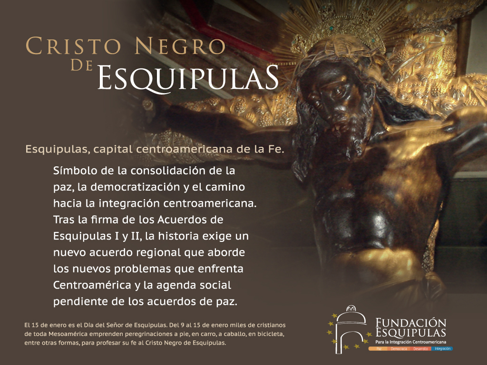

Luego de la conquista de Esquipulas en el año 1530, los misioneros
españoles iniciaron el trabajo de evangelización de los pueblos conquistados. En el año de 1594 cuando la religión católica había echado raíces, los locales aprovecharon una abundante cosecha de algodón y decidieron encargar una imagen de Jesús crucificado. Don Cristóbal de Morales contrató al escultor portugués Quirio Cataño, quien en ese tiempo vivía en la ciudad de Santiago de los Caballeros de Guatemala, para que creara dicha imagen. El artista entregó el trabajo encomendado el 4 de octubre del mismo año.
El contrato original por medio del cual se encargó la obra se conservó durante mucho tiempo en la Parroquia de Quezaltepeque, hasta que Fray Andrés de las Navas,
Obispo de Guatemala, ordenó que se hiciera una copia del mismo debido a su deterioro. A continuación se incluye una copia del texto consignado en dicho contrato:
En la Ciudad de Santiago de Guatemala, a los veintinueve días del mes de agosto del año mil quinientos noventa y cuatro, Cristóbal de Morales, Provisor de este Obispado, concertó con Quirio Cataño, oficial de escultor, que haga para el Pueblo de Esquipulas un Crucifijo de vara y media, muy bien acabado y perfeccionado, que lo debe dar acabado el día de San Francisco, primero que viene, y se han de dar por él cien tostones de cuatro reales de plata cada uno; y para en cuenta de los dichos cien tostones confesó haber recibido adelantados cincuenta tostones de los cuales recibió realmente y él se obligó a cumplirlo, y para ello obligó su persona y bienes y lo firmó de su nombre y el dicho Provisor.
– Cristóbal de Morales - Quirio Cataño.